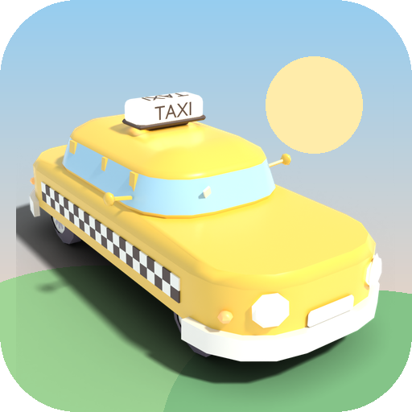
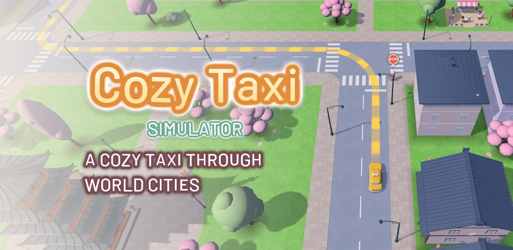
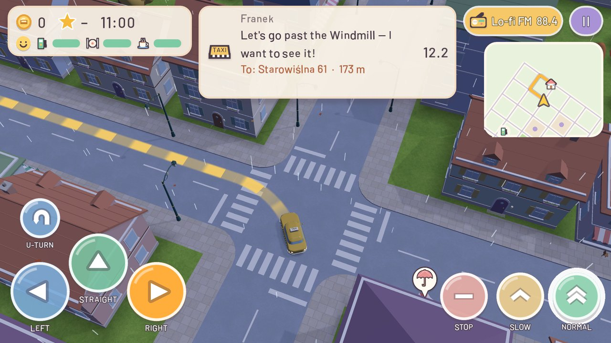
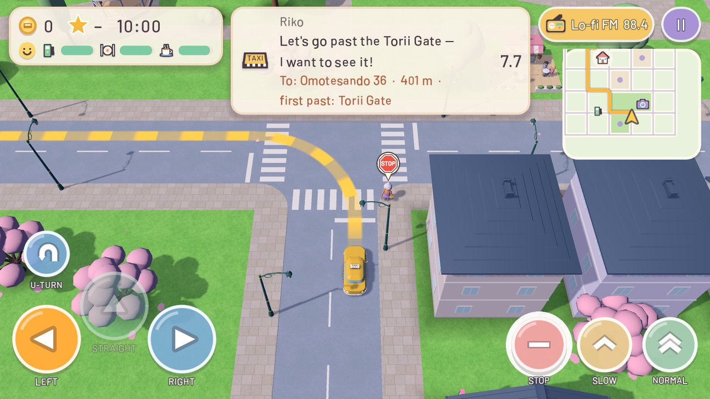
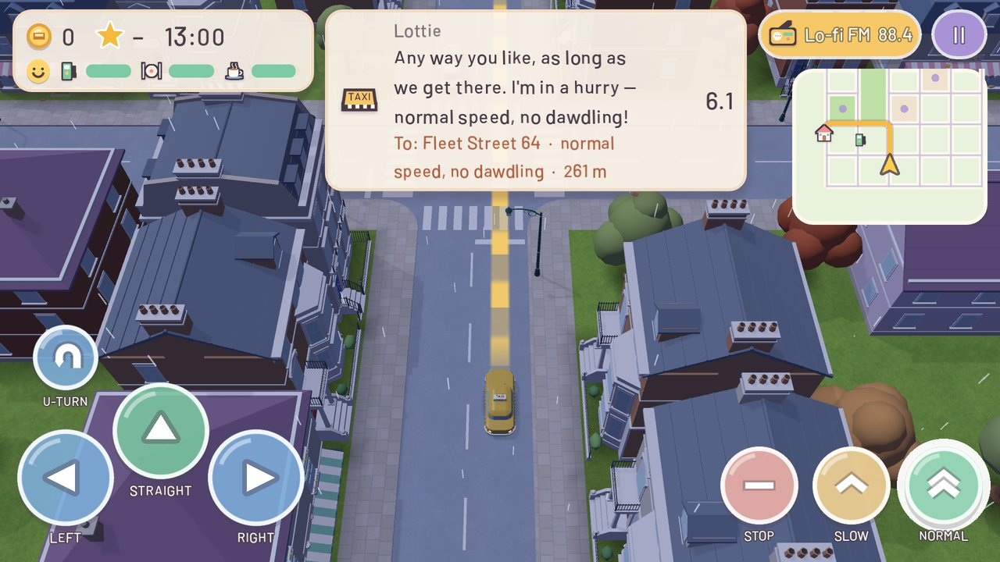
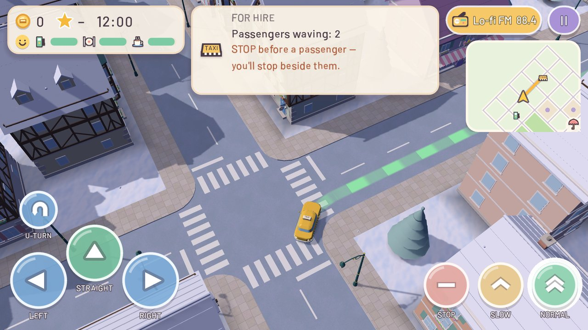
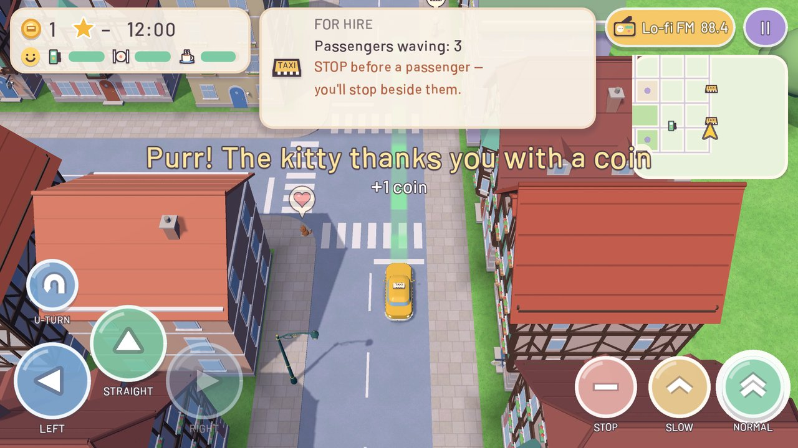
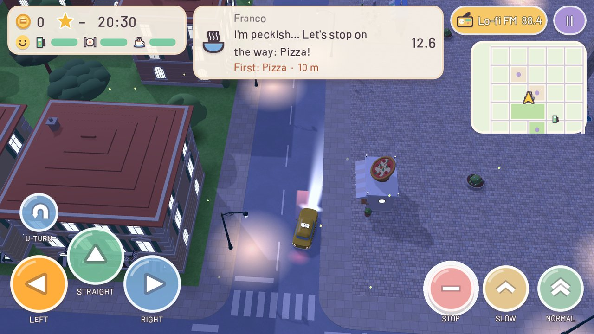
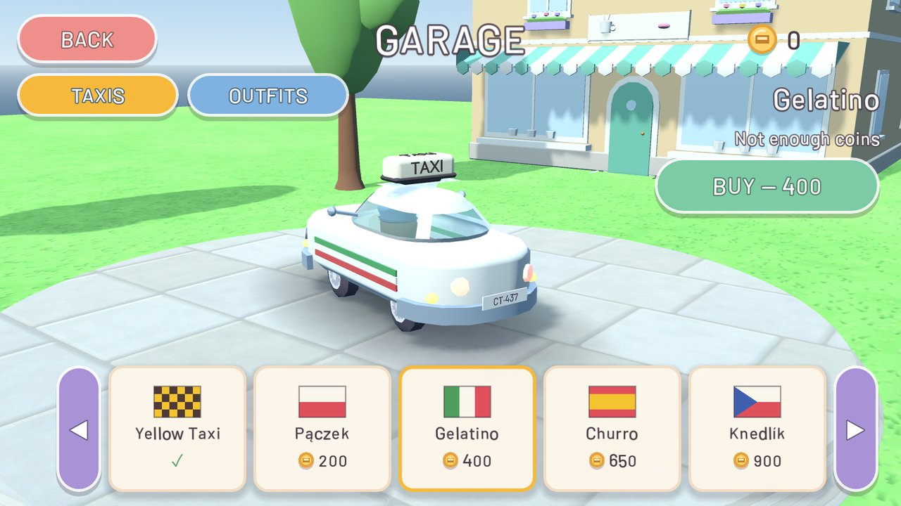
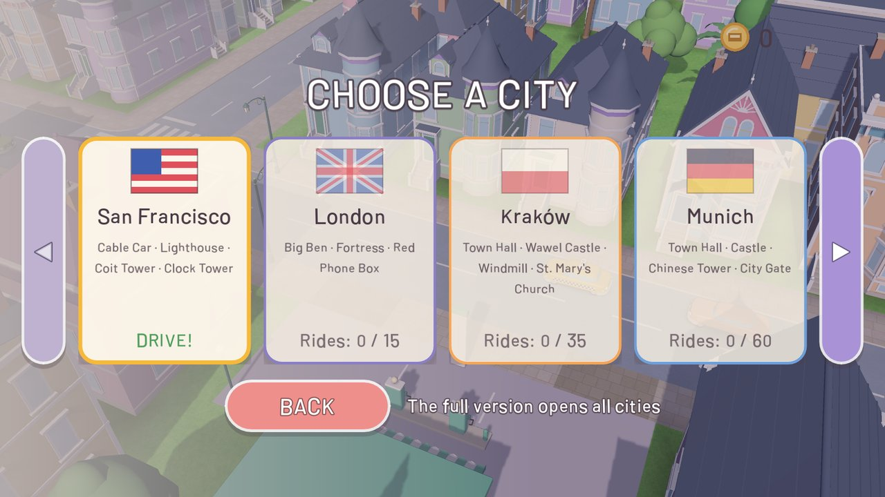

A relaxing taxi ride through pastel cities
Hop into a little yellow taxi and drive passengers around pastel cities. No crashes, no timer and no game over — just you, your cab, the radio and passengers who need a lift.
Get it on Google PlayFree · Android









The game is free and shows ads: a full-screen ad about every 2 minutes of driving and optional rewarded videos you choose to watch (trial rides). A one-time Full Version removes all ads and unlocks every city, taxi and outfit.
No account needed. Languages: English, Polish, German, Czech, French, Spanish, Portuguese, Italian and Japanese.